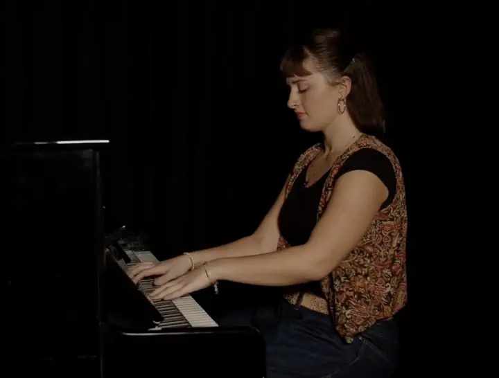
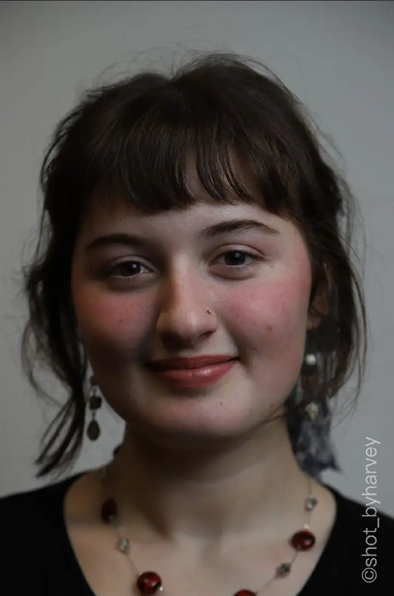

A portfolio in five movements
Emily Cruz
for voice, piano, accordion, guitar, bass guitar, double bass and saxophones
Emily is in the UK tour of Pride and Prejudice* *(sort of), as 1st cover for Effie, Flo and Tillie.

I. Overture Showreels, instrumental first
Spotlight hosts these reels. Nothing is sent to Spotlight until you press play; then your browser loads Spotlight's player from mediaviewer.spotlight.com, which sees your IP address and may set its own cookies.


Showcase: They All Laughed
II. Instrumentation Skills
Music
- Alto (voice)
- Piano
- Accordion
- Guitar
- Bass guitar
- Double bass
- Alto saxophone
- Tenor saxophone
- Musical director
Dance
- Commercial
- Jazz
- Tap
- Hip hop
Accents and dialects
- Standard English
- RP
- Heightened RP
- Cockney
- West Country
- Northern Irish
- American: East Coast
- American: New York
- American: Southern States
- Portuguese
- Spanish
Languages
- English
- Portuguese
- Spanish
Performance
- Actor-musician
- Laban training
Other
- Painting
- Crochet
- Knitting
- Cycling
- Field hockey
- Football
- Netball
- Swimming
- Car driving licence
- Playing age
- 15 to 25
- Height
- 5 ft 5 in (165 cm)
- Hair
- Light/mid brown, mid length
- Eyes
- Hazel
- Nationalities
- British, Portuguese
- Location
- Greater London
III. Repertoire Credits, latest first
- Pride and Prejudice* *(sort of) 1st Cover: Effie, Flo, TillieDavid Pugh, 2026. Directed by Isobel McArthur.
- Vinegar Tom Musical Director/EnsembleGuildford School of Acting, 2026. Directed by Amy Wallace.
- Saturday Night DinoGuildford School of Acting, 2026. Directed by Simon Hardwick.
- The All New Adventures of Peter Pan Assistant MDEvolution Productions, 2025. Directed by Will Kenning/Eoin Mallon.
- I Should Be So Lucky BonnieATG Productions, 2025. Directed by Stuart Morley.
- Tom's Midnight Garden Aunt GraceGuildford School of Acting, 2025. Directed by Cressida Carré.
- Into The Woods Keys 2Project Theatre Company, 2025. Directed by Owen White.
- She Loves Me MaraczekGuildford School of Acting, 2025. Directed by Phyllida Crowley Smith.
- Twelve Angry Men Juror 3Guildford School of Acting, 2025. Directed by Anna Tringham.
- Coriolanus SiciniusGuildford School of Acting, 2024. Directed by Chris Palmer.
Training. Guildford School of Acting, BA (Hons) Actor-Musician, 3 years, 2023 to 2026.
IV. Interlude Photographs








V. Coda Representation
For casting and all enquiries, please contact Emily's agent.
GallowaysHenry Wood House, 4-5 Langham Place
London W1B 3DG
020 7631 3134 or 07752 705359
agents@gallowaysagency.com